의공기사 (2015-03-08 기출문제)
1과목: 기초의학 및 의공학
1. 스트레인 센서 브리지 회로에서 힘을 가하면 각 R들의 요소 저항값은 10Ω씩 변할 때 A점과 B점 사이의 출력 전압은? (단, R1 = R2 = R3 = R4 = 200Ω이다.)
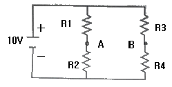
- - 0.3 [v]
- - 0.4 [v]
- - 0.5 [v]
- - 0.6 [v]
(정답률: 66%)

2. 적골수가 존재하는 곳은?
- 골수강
- 골단의 해면골
- 골간의 치밀골
- 골간의 해면골
(정답률: 66%)
3. 압전소자에 전압을 가하면 변형이 생기는 현상을 이용한 장치가 아닌 것은?
- 초음파 쇄석기
- 심음도 측정장치
- 도플러 혈류 측정기
- 진단용 초음파 영상기기
(정답률: 69%)
4. ECG 측정 장치에서 잡음의 원인이 아닌 것은?
- 환자의 움직임
- 전극(electrode)의 접촉 불량
- 제세동장치(defibrillator)의 사용
- 스트레스로 인한 EEG 신호의 증가
(정답률: 86%)
5. 세포 내 구조인 리소좀(lysosome)의 역할로 옳은 것은?
- 영양소로부터 에너지를 추출
- 독성물질을 해독하는 등의 세포 보호기능
- 여러 세포소기관들과의 상호작용을 통하여 단백질을 합성하는 역할
- 소화효소를 함유하여 노화된 세포소기관이나 부스러기같은 물질들을 분해
(정답률: 88%)
6. 다음 A, B 사이에 9[V]의 전압이 걸려 있을 때, a와 c사이의 전압은 몇 [V] 인가?
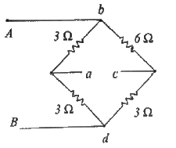
- -1.5
- 0
- 1.5
- 3
(정답률: 75%)
7. 5대 영양소에 해당되지 않는 것은?
- 탄수화물
- 단백질
- 무과당
- 지방
(정답률: 92%)
8. 다음 그림은 전극의 간격이 변화하는 커패시터 센서를 나타낸 것이다. εrε0 의 곱이 0.001 C2/N·m2 이고, 두판의 면적이 각각 1m2 일 때, 거리 x가 0.01m 일 때의 커패시턴스는? (단, εr : 비유전율, ε0 : 자유공간의 유전율)
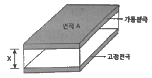
- 0.01 [F]
- 0.1 [F]
- 1 [F]
- 10 [F]
(정답률: 80%)
9. 생체표면전극에 대한 설명으로 틀린 것은?
- 인체를 구성하는 많은 세포들은 활동하기 위하여 각각 세포안팎으로 이온에 의한 전기의 흐름이 일어난다.
- 체표면에 전극을 부착하는데, 인체 내부의 전기변화 는 매우 작고, 몸을 덮고 있는 피부는 일반적으로 전기를 잘 통과시키지 못하는 성질이 있다.
- 체표면 전극의 경우, 계측상태의 임피던스는 전극, 피부및 내부조직의 임피던스에 의하여 형성된다.
- 피부 임피던스는 일반적으로 RC-병렬회로로 표기되는데, 고주파 영역에서는 전극접촉 임피던스가 주파수에 반비례한다.
(정답률: 74%)
10. PET(positron emission tomography)에 대한 설명으로 틀린 것은?
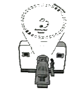
- 암세포 부근에서 발생하는 positron을 센서내의 전자와 결합시키고 광자의 양을 측정하는 구조이다.
- 가속기(cyclotron)를 이용하여 반감기가 매우 짧은 방사선 물질을 만들어 낸다.
- positron을 내면서 방사능 붕괴를 하는 물질이 포함된 조영제가 필요하다.
- 체내의 물질 대사과정을 관측할 수 있다.
(정답률: 58%)
11. 혈관계에서 세포에 영양분과 산소를 공급하고 노폐물을 교환하는 것은?
- 대동맥
- 정맥
- 모세혈관
- 동맥
(정답률: 85%)
12. 다음 중 은-염화은(Ag-AgCl) 전극의 특성에 해당하는 것은?
- 전기적 특성이 저항성이다.
- 고주파 신호 측정에 적합하다.
- 장기간 사용가능하다.
- 수명이 길다.
(정답률: 68%)
13. 다음 중 동맥혈압이 가장 높은 인체의 부위는?
- 다리
- 목
- 가슴
- 머리
(정답률: 84%)
14. 의료 및 생체실험용으로 많이 쓰이는 대표적인 비분극 전극에 해당하는 것은?
- 은 전극
- 금 전극
- 은-염화은 전극
- 스테인리스 바늘전극
(정답률: 90%)
15. 생체신호 측정용 전극에서 유리모세관을 이용하여 제작되며, 일반적으로 3mol의 KCI을 봉입하고 와이어전극을 삽입하여 만들어지고, 전극으로는 은-염화은이 많이 이용되지만, 스테인리스강으로도 제작되는 전극은?
- 마이크로 피펫 전극 (Micropipet electrode)
- 실리콘 미세전극 (Silicone microelectrode)
- 금속 미세전극 (Metal microelectrode)
- 침 전극 (Needle electrode)
(정답률: 87%)
16. 인체피부에 탈부착이 쉽고 빠른 반면 장시간 사용에 부적합하고 굴곡이 심한 부위에는 부착할 수 없는 전극은?
- 부유 전극
- 흡착 전극
- 미세 전극
- 금속판 전극
(정답률: 88%)
17. 세포외에 K+이 많아지는 과칼륨혈증(HyperKalemia) 상태가 되면 탈분극이 지연되는 현상이 생길 때 심전도의 형태는?
- P파는 높아진다.
- QRS파는 넓어(Widening)진다.
- T파는 낮아진다.
- U파는 소멸된다.
(정답률: 89%)
18. 혈액이 속하는 인체 조직은?
- 결합조직
- 상피조직
- 근육조직
- 신경조직
(정답률: 77%)
19. 다음 설명의 ( ) 안에 알맞은 단어는?
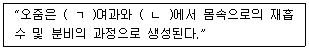
- (ㄱ) : 세뇨관, (ㄴ) : 사구체
- (ㄱ) : 사구체, (ㄴ) : 세뇨관
- (ㄱ) : 보우만 주머니, (ㄴ) : 세뇨관
- (ㄱ) : 보우만 주머니, (ㄴ) : 사구체
(정답률: 87%)
20. 회전감각을 담당하는 구조물은? (문제 오류로 실제 시험에서는 모두 정답처리 되었습니다. 여기서는 1번을 누르면 정답 처리 됩니다.)
- 귀바퀴
- 이소골
- 달팽이관
- 와우
(정답률: 85%)
2과목: 의용전자공학
21. 다음 R-L-C 직·병렬회로에서 R = 30[Ω] XC = 25[Ω] 및 XL = 50[Ω]일 때, 합성 임피던스[Ω]는?
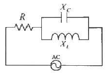
- 30-j25 [Ω]
- 30+j25 [Ω]
- 30-j50 [Ω]
- 30+j50 [Ω]
(정답률: 56%)
22. 심전도 파형에서 심실의 탈분극을 나타내는 파형은?
- P 파
- T 파
- QRS 군
- U 파
(정답률: 77%)
23. 컴퓨터에서 주소와 기억장소를 연결시키는 것은?
- 머징 (Merging)
- 인터럽트 (Interrupt)
- 오버 래핑 (Over lapping)
- 어드레스 매핑 (address Mapping)
(정답률: 78%)
24. 맥스웰의 전자 방정식 중에서 자계가 시간에 따라 변하면 전계가 발생한다는 정의의 미분형 관계식은?
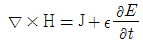
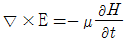
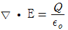
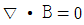
(정답률: 68%)
25. 다음과 같은 진리표(truth table)에 따라 동작하는 소자는?
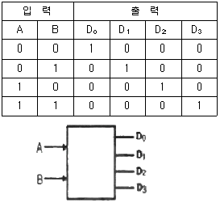
- 디코더
- 인코더
- MUX
- 전가산기
(정답률: 76%)
26. 이상적인 다이오드를 사용하여 실효전압 10[V]인 교류를 반파정류하고 있다. 정류출력에 캐패시터 입력형 평활회로(필터)를 연결하였을 때 출력전압은? (단, 이 때 부하전류는 충분히 작은 것으로 가정한다.)
- 약 14.1 [V]
- 약 10.1 [V]
- 약 5.0 [V]
- 약 0 [V]
(정답률: 65%)
27. 두 저항 R1과 R2가 병렬 연결된 회로에 4[V]전압이 인가되면 R1에 흐르는 전류는? (단, R1=2[Ω], R2=4[Ω] 이다.)
- 6 [A]
- 2[A]
- 1[A]
- 0.8[A]
(정답률: 72%)
28. 안구운동 측정법으로 틀린 것은?
- 콘택트렌즈법
- 각막반사법
- 전자측정법
- 증폭사지측정법
(정답률: 84%)
29. 생체신호의 계측시 신체표면에 센서를 부착하여 측정하는 방식은?
- 외부 측정
- 표면 측정
- 침습적 측정
- 샘플 측정
(정답률: 87%)
30. CPU 내부의 처리할 명령이나 연산의 결과 값 등을 임시로 기억하는 장소로 메모리 중에 속도가 가장 빠른것은?
- ROM
- RAM
- USB
- 레지스터
(정답률: 81%)
31. 유전체의 특수 현상이 아닌 것은?
- 접촉 전기
- 펠티어 효과
- 압전기 현상
- 파이로 전기
(정답률: 70%)
32. 생체신호계측기의 출력신호가 0.63[V]이고, 출력에서 잡음전압이 63[μV]일 때 출력신호의 S/N 비는?
- 40[dB]
- 60[dB]
- 80[dB]
- 100[dB]
(정답률: 66%)
33. 생체 압력계측 중 혈압측정에 있어서 직접측정에 대한 설명으로 옳은 것은?
- 카테터에 스트레인게이지 타입의 압력센서를 연결하여 혈압파형 계측
- 커프내압과 수축기 압력이 같아지면 혈액 흐름이 시작 되고 와류에 의한 소리 발생
- 커프내압이 수축기 압력보다 높으면 동맥 폐쇄, 혈액 순환 중지
- 서서히 커프내압을 내리며 말단표면에서 청진, 동시에 커프내압 관찰
(정답률: 80%)
34. 생체계측과 관련하여 생체현상의 특수성에 대한 설명으로 틀린 것은?
- 재현성이 빈약하다.
- 개체의 차가 크나 개체 내에서는 항상성이 유지되어 있다.
- 생체신호는 미약하고, 일반적으로 S/B가 크다.
- 생체 어느 특정부위 측정 신호의 순수성을 유지하기 어렵다.
(정답률: 65%)
35. 초음파 유량계에서 입사파와 반사파 간의 주파수 차이를 측정하는 방법은?
- 통과시간 유량계
- 도플러 유량계
- 펄스 도플러
- 압력 유량계
(정답률: 79%)
36. 수정 발진기의 발진 주파수가 안정한 이유로 옳은 것은?
- 수정 진동자의 온도계수가 적기 때문이다.
- 압전기 현상이 있기 때문이다.
- 수정 진동자가 고유 진동을 하기 때문이다.
- 선택도(Q)가 매우 높기 때문이다.
(정답률: 74%)
37. 다음 그림의 논리 회로를 식으로 올바르게 나타낸 것은?
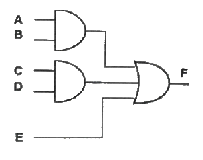
- AB + CD + E
- AB · CD · E
- AB + CD · E
- AB · CD + E
(정답률: 80%)
38. 트랜지스터 βDC 에 대한 설명으로 틀린 것은?
- 온도에 따라 변한다.
- 직류 전류이득이다.
- 같은 소자일지라도 다를 수 있다.
- 전형적으로 0.95에서 0.99의 값을 갖는다.
(정답률: 68%)
39. 진성 반도체에 대한 설명으로 옳은 것은?
- 양의 온도계수를 갖는다.
- 이온결합 구조를 갖는다.
- 불순물을 첨가하여 p형과 n형을 갖는다.
- 금속보다는 작고, 절연체보다는 큰 저항을 갖는다.
(정답률: 75%)
40. 다음 회로에서 C의 역할은?
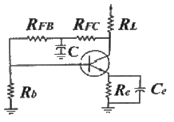
- AC 전압 귀환을 막아준다.
- 직류 전압 귀환을 막아준다.
- 직류 전류 귀환을 막아준다.
- 결합 콘덴서이다.
(정답률: 68%)
3과목: 의료안전·법규 및 정보
41. AMIA(America medical Informatics Association)에서 제시한 의료정보학의 목표에 포함되지 않는 분야는?
- 정보의 검색과 관리
- 컴퓨터 보조학습
- 컴퓨터 조작방법의 습득
- 의무기록의 효율성 증대
(정답률: 79%)
42. 다음 중 원격의료를 시행함으로써 환자측면에서 얻을 수 있는 장점이 아닌 것은?
- 전문의와 신속한 접촉
- 지속적인 진료
- 조기진단
- 진료의 정확성
(정답률: 85%)
43. 보건복지부장관이 임명 또는 위촉하는 의료기기 위원회의 위원으로 구성될 수 있는 자가 될 수 있는 자격에 해당되지 않는 사람은?
- 의료기기 관련 업무를 담당하는 5급 공무원
- 의료기기 관련 단체에서 추천한 자
- 의료기기에 관한 학식과 경험이 풍부한 자
- 시민단체(비영리 민간단체 지원법 제 2조의 규정에 의한 비영리민간단체)에서 추천한 자
(정답률: 74%)
44. 의료가스의 통일된 규격을 사용하고, 설치장소를 효과적으로 배치하며, 경보장치를 설치하는 이유로 적당한 것은?
- 의료가스의 적정용량 확보
- 의료가스의 안전한 유지관리
- 의료가스의 청정상태 유지
- 의료가스의 비용절감
(정답률: 88%)
45. 의료기기법 시행규칙에서 수입업자의 준수사항이 아닌 것은?
- 보건위생상 위해가 없도록 영업소의 시설을 위생적으로 관리할 것
- 중고의료기기를 수입하는 경우에는 시험검사기관의 검사필증을 부착하여 판매할 것
- 2년마다 수입실적을 보건복지부장관에게 보고할 것
- 멸균제품인 경우에는 멸균되었음을 검장한 후 출고할 것
(정답률: 84%)
46. 의료기기 판매업 또는 임대업 신고를 하여야 하는 자는?
- 의료기기의 제조업자나 수입업자가 그 제조 또는 수입한 의료기기를 의료기기취급자에게 판매 또는 임대하는 경우
- 의료기기판매 또는 임대를 업으로 하고자 하는 경우
- 약국개설자나 의약품도매상이 의료기기를 판매 또는 임대하는 경우
- 보건복지가족부령이 정하는 임신조절용 의료기기 및 의료기관 이외의 장소에서 사용되는 자가진단용 의료기기를 판매하는 경우
(정답률: 86%)
47. 의료기기 관련설명으로 옳은 것은?
- ISO14001 - 의료기기분야의 품질경영시스템 인증 기준
- GE 마크 - 가전제품에서 발생하는 유해전자파를 억제하는 장치가 부착되었다는 표기
- CE 마크 - 제품이 안전과 건강, 환경, 소비자 보호와 관련된 유럽 규격의 조건들을 준수한다는 의미
- HD 및 HH 마크 - 식품· 약품· 화장품· 의료기기 등의 품질과 기능을 엄격히 평가해 기준을 통과한 제품에 부여하는 표시
(정답률: 65%)
48. SNOMED의 설명으로 틀린 것은?
- 약제의 체계적이고 계층 구조적인 분류를 위해 만들어졌다.
- SNOMED의 진단은 4가지 코드(T, M, L, F)를 가질 수 있다.
- SNOMED Ⅱ는 7가지의 축을 갖는 코드이고 SNOMED international은 11가지의 축을 가지고 있다.
- 병의 여러 가지 특성을 코드화 할 수 있다.
(정답률: 61%)
49. 의료기기의 제조· 수입 및 판매 등에 관한 사항을 규정함으로써 의료기기의 효율적인 관리를 도모하고 국민보건 향상에 이바지함을 목적으로 하는 법은?
- 의료법
- 의료기사법
- 의료기기법
- 수의사법
(정답률: 88%)
50. 다양한 의료정보시스템 간 정보의 교환을 위하여 미국국립표준연구소가 인증한 의료정보 교환 표준 규약은?
- HL7(Health Level 7)
- DICOM(Digital Imaging and Communication in Medicine)
- SNOMED(Systematized Nomenclature of Medicine)
- PACS(Picture Archiving and Communication System)
(정답률: 78%)
51. 의료기기의 등급 분류를 위한 잠재적 위해성에 대한 판단기준에 해당하지 않는 것은?
- 의료기기의 인체 삽입 여부
- 구강 내에서의 화학적 변화 유무
- 의약품이나 에너지를 환자에게 전달하는지 여부
- 환자에게 국소적 또는 전신적인 생물학적 영향을 미치는지 여부
(정답률: 80%)
52. 의료용기기의 전기충격 보호정도에 따른 분류에 속하지 않는 것은?
- B형
- BF형
- CF형
- C형
(정답률: 78%)
53. 의료기기법 제20조에서 정한 의료기기의 용기나 외장에 기재하여야 할 사항은?
- 품목명, 형명, 허가(신고)번호
- 형상 및 구조
- 원자재
- 시험규격
(정답률: 86%)
54. 의료기기법령상 의료기기위원회의 조사·심의 사항에 해당하지 않은 것은?
- 의료기기의 안정성 평가에 관한 사항
- 의료기기의 기준규격에 관한 사항
- 의료기기의 재심사· 재평가에 관한 사항
- 추적관리대상 의료기기에 관한 사항
(정답률: 49%)
55. PACS가 X-RAY 필름 기반의 영상 관리 시스템의 문제점을 해결하기 위해 도입되었을 때의 장점이 아닌 것은?
- 필름의 인상과 현상액으로 인한 환경오염을 줄일 수 있다.
- 자료를 검색하는데 많은 시간과 인력이 필요하다.
- 필름을 보관하기 위한 저장 공간과 비용을 줄일 수 있다.
- 환자의 대기 시간을 줄임으로써 진료의 질적향상을 도모할 수 있다.
(정답률: 86%)
56. 마이크로 쇼크를 일으키는 감지 전류에 대한 설명으로 틀린 것은?
- 체중이 무거우면 감지 전류가 높다.
- 주파수가 높을수록 감지 전류가 크다.
- 매크로 쇼크 최소 감지 전류는 10mA 이다.
- 접촉면이 커질수록 감지 전류 값이 커진다.
(정답률: 62%)
57. 의료폐기물로 성상과 위해도에 따른 분류에 속하지 않는 것은?
- 격리의료폐기물
- 일반의료폐기물
- 위해의료폐기물
- 방사선폐기물
(정답률: 80%)
58. EHR(Electronic Health Record)에 대한 설명으로 틀린 것은?
- 개인의 전자적인 건강정보에 대한 실시간적 제공
- EMR이 각 의료기관에서 개별적으로 추진해온 전자의 무기록이라 한다면, EHR은 국가적으로 확장된 형태
- 지식베이스와 의가결정 지원시스템의 지원을 받기가 용이
- 개인의 정자적인 건강정보에 대한 단기적인 수집
(정답률: 76%)
59. 원격의료의 활용 분야가 아닌 것은?
- 인터넷 가상병원
- 원격 재활 치료
- 원격 수술 및 처치
- 원격 의료교육
(정답률: 64%)
60. 전자파의 성질에 해당되지 않는 것은?
- 전자파는 초당 60만 Km의 속도로 진행한다.
- 전자파의 주파수가 높으면 파장은 짧고 주파수가 낮으면 파장은 길다.
- 전자파는 파장이 짧을수록 에너지는 커지고 더 높은 투과력을 가진다.
- 전자파는 거리가 멀어질수록 약해지는 성질이 있다.
(정답률: 65%)
4과목: 의료기기
61. X-선 CT의 구성 요소가 아닌 것은?
- 시준기
- 감마 카메라
- X-선관
- X선 디텍터
(정답률: 82%)
62. 페이스메이커에서 심근에 전기자극을 가할 때 주로 이용되는 전기 파형의 형태는?
- 삼각파(triangle wave)
- 충격파(impulse wave)
- 방형파(square wave)
- 사인파(sine wave)
(정답률: 52%)
63. 다음에 설명된 인공호흡기의 종류는?
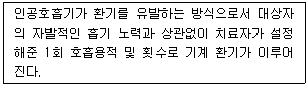
- IMV (동시성 간헐적 강제환기)
- CPAP (지속성 기도양압)
- CMV (계속적 인공호흡기)
- IMV (간헐적 강제환기)
(정답률: 61%)
64. 검사자의 각막에 형광액을 주입하고 직경이 3.06[mm]가 될 때까지 각막을 압평시키는 힘을 측정하는 방법은?
- 안평 안압계
- 함입 안압계
- Goldmann 안압계
- 비접촉 안압계
(정답률: 73%)
65. 방사선 치료의 원리로 틀린 것은?
- 방사선 에너지가 인체를 구성하는 원자분자로 이행되어 화합물의 조성을 변화시킴
- 방사선을 받은 세포는 대부분 그 이후의 세포분열시 기능장애를 일으킴
- 전자선은 깊은 부위의 종양치료에 사용되며 X선과 감마선은 피부근처의 종양치료에 사용
- 방사선은 정상조직과 암조직 모드 장애를 일으키지만 정상 조직은 시간이 지나면 회복되나 종양조직은 회복이 불가능하게 됨
(정답률: 71%)
66. 체성분 분석 장치로 측정되지 않은 것은?
- 수분
- 단백질
- 지방
- 혈당
(정답률: 82%)
67. 혈압 측정법 중 간접 또는 비침습적 혈압 측정 방법이 아닌 것은?
- 오실로메트릭법
- 초음파 감지법
- Oscillation method
- Catheterization
(정답률: 85%)
68. 제세동기의 설명으로 틀린 것은?
- 심장에 강한 전기충격을 가해 세동을 종료시키는 장치이다.
- 심근의 세포들을 동시에 탈분극 시켜 절대적 불응기로 만든다.
- 동방결절이 회복되어 정상적인 리듬을 찾도록 한다.
- 안전을 위해 심근의 20% 미만이 탈분극 되도록 한다.
(정답률: 83%)
69. 인큐베이터의 기능이 아닌 것은?
- 온도조절
- 영양조절
- 습도조절
- 통풍
(정답률: 85%)
70. 청력진단에서 유아나 지체부자유자와 같이 의사표시에 어려움이 있는 피검자를 대상으로 청각자극 인지 여부를 판별할 때 사용하기에 적당한 생체전기신호 그래프는?
- EOG
- EEG
- ECG
- EMG
(정답률: 76%)
71. 체열진단기에 사용되는 원리에 대한 설명으로 틀린 것은?
- 펠티어 효과를 이용
- 전 방사에너지는 절대온도의 4승에 비례
- 생체에서 방사되는 적외선에너지를 측정하여 체온측정
- 모든 물체는 절대온도가 0° K 이상이 되면 에너지를 방사
(정답률: 57%)
72. 초음파 혈류계를 이용하여 혈류량을 계측할 경우 필요한 항목이 아닌 것은?
- 도플러비트주파수
- 혈관의 두께
- 혈류속도
- 초음파발사주파수
(정답률: 65%)
73. 화합물질의 분리와 분석 및 물질의 식별과 농도를 결정 할 수 있는 의료기기의 명칭은?
- 크로마토그래프
- 염광광도계
- 분광광도계
- 비색계
(정답률: 77%)
74. 혈압측정에 관한 설명으로 틀린 것은?
- 혈압측정에 영향을 미치는 요인 중 혈관의 탄성이 떨어지면 혈압이 낮아진다.
- 직접적(또는 관혈적-invasive) 방법과 간접적(또는 비관혈적-noninvasive) 방법으로 나눈다.
- 환자가 똑바로 누운자세(supine position)에서 심장과 혈압을 측정하는 센서의 높이는 같아야 한다.
- 상완의 압박주머니를 심장 수축압력보다 높게 팽창한 후 압력을 낮추면 혈류에 의해 나는 소리를 들을 수 있다.
(정답률: 64%)
75. 다음 중 인공심폐기의 구성요소가 아닌 것은?
- 동정맥루
- 산화기
- 여과기
- 혈액펌프
(정답률: 69%)
76. 인공심폐기 중 막형 산화기의 재료로 적절하지 않은 것은?
- Silicon rubber membrane
- Polypropylene membrane
- Ceramic membrane
- Teflon membrane
(정답률: 69%)
77. X-선 단층촬영장치(CT)에 관한 설명 중 틀린 것은?
- 고정된 X-선 발생장치로부터 나와 영상을 얻고자 하는 대상 물체를 투과한 X-선을 반대편의 고정된 X-선 검출기로 영상 신호를 획득한다.
- X-선 CT 영상은 컴퓨터를 이용하여 projection reconstruction 알고리즘과 같은 분석적(analytic)방법 또는 반복적(interative) 방법으로 재구성된다.
- X-선 CT 영상은 MRI 영상에 비해 연부조직(soft tissue)의 대조도(contrast)가 뛰어나지 않다.
- 환자조직의 X-선에 대한 감쇄계수를 정규화하여 나타내는 단위로 Hounsfield 단위를 사용한다.
(정답률: 73%)
78. 초음파가 매질 1에서 매질 2로 두 매질사이의 경계면을 수직으로 입사할 때 경계면을 투과하는 음파 강도는? (단, 매질 1에서 음향임피던스는 1RayⅠ, 매질 2에서의 음향임피던스는 2 RAyⅠ 이다.)
- 약 29%
- 약 49%
- 약 69%
- 약 89%
(정답률: 71%)
79. 뇌파를 검사하기 위한 뇌전도 장치의 전극에 대한 설명으로 틀린 것은?
- 두피 전극으로 평판전극과 침전극이 있다.
- 뇌전도계의 전극은 뇌파의 파형 유도가 시간에 따라 변해야 한다.
- 은-염화은 전극을 많이 사용한다.
- 전극 유도법으로는 단극유도법과 쌍극유도법이 있다.
(정답률: 50%)
80. 감마카메라에 대한 설명으로 옳지 않은 것은?
- 섬광검출기는 인체 내에서 체외로 방출하는 감마선을 감지한다.
- 섬광검출기가 2차원적으로 배열되어 있어 2차원 영상을 얻는다.
- 영상을 얻기 위한 기계적주사(scanning) 동작이 필요없다.
- 섬광결정체는 감마선을 적외선으로 바꾸어 준다.
(정답률: 62%)
5과목: 의용기계공학
81. 생체 재흡수성 세라믹 재료로 옳은 것은?
- 알루미나(Al2O3)
- 지르코니아(ZrO2)
- 트리칼슘포스페이트(TCP)
- 수산화아파타이트(수산화인회석 : Hydroxyapatite)
(정답률: 57%)
82. 주파수 100[Hz]에서 저항률이 가장 높은 조직은?
- 혈액
- 간장
- 골격극
- 지방
(정답률: 75%)
83. 방사선치료의 특이성에 대한 설명으로 옳은 것은?
- 방사선에 노출된 종양세포만이 방사선의 영향을 받는다.
- 정상세포와 암세포는 회복속도가 같다.
- 일정시간에 여러 번 나누어 치료하는 것이 많은 양의 방사선을 한 번에 조사하는 것보다 효과적이다.
- 몇몇 종류의 암세포들은 방사선을 쪼이면 세포분열이 왕성하게 일어나며, 그로 인해 산소공급 부족으로 세포괴사가 일어난다.
(정답률: 84%)
84. 기어의 종류 중 교차축 기어가 아닌 것은?
- 하이포이드 기어
- 헬리컬 베벨기어
- 스퍼 베벨기어
- 크라운 기어
(정답률: 48%)
85. 응력-변형률선도 곡선의 내부면적으로 정의되는 특성은?
- 인성
- 취성
- 연성
- 탄성
(정답률: 69%)
86. 인공관절에 이용되는 폴리아세탈(Polyacetal)의 특성으로 틀린 것은?
- 분자량이 높다.
- 기계적 특성이 뛰어나다.
- 모든 화합물과 물에 강한 저항력이 있다.
- 탄성이 좋고 질긴 특성을 갖는다.
(정답률: 55%)
87. 다음 중 이물반응의 4단계 발달과정이 아닌 것은?
- 피복
- 재형성
- 추출
- 통합
(정답률: 38%)
88. 초음파 탐촉자의 반경이 2[mm], 주파수가 3[MHz]일 때, 근거리 음장은? (단, 음속은 6 × 106[mm/sec] 이다.)
- 1[mm]
- 2[mm]
- 4[mm]
- 6[mm]
(정답률: 58%)
89. 초음파 탐촉자의 초음파 발생소자가 음파를 발생시키는 주요 원인은?
- 압전효과(Piezoelectric effect)
- 음향 전기적 효과음
- 음향 광학적 효과
- 도플러 효과(Doppler effect)
(정답률: 72%)
90. 보행시에 슬관절 최대굴곡으로부터 경골이 지면에 수직되는 시기는?
- 하중수용기
- 중각유각기
- 전유각기
- 중각입각기
(정답률: 76%)
91. 점성계수의 단위 1[p]=10-1[Ns/m2]일 때 1[cp]는?
- 10-3[N/m2]
- 10-1[N/m2]
- 10-3[Ns/m2]
- 10-1[Ns/m2]
(정답률: 83%)
92. 생체신호원인 생체전기는 전기적으로 절연체인 세포막을 중심으로 내외부로 분리되는데, 세포막의 특징으로 옳은 것은?(오류 신고가 접수된 문제입니다. 반드시 정답과 해설을 확인하시기 바랍니다.)
- 세포막은 주로 포도당으로 이루어져 전기적 절연체 역할을 한다.
- 세포막의 두께는 약 10[nm] 로 약 70[mV]의 세포막 전위를 생성한다.
- 세포막의 두께는 약 10[mm] 로 약 70[mV]의 세포막 전위를 생성한다.
- 세포막의 두께는 약 10[mm] 로 약 70[V]의 세포막 전위를 생성한다.
(정답률: 76%)
93. 생체재료의 표면특성 평가법이 아닌 것은?
- 접촉각 분석
- 계면 전위 분석
- 이온 질량 분석
- 파괴 인성 분석
(정답률: 54%)
94. 의료용 실리콘 재료의 특성으로 틀린 것은?
- 상온에서 잘 견디며, 열전도도가 우수
- 열적, 화학적으로 안정된 소재
- 기체 투과성이 커서 인공 심폐기용 막으로 사용
- 생체 안정성이 우수하여 인공 귀, 코 등에 사용
(정답률: 55%)
95. 주로 인공혈관을 만드는데 이용되며 반복단위는 폴리에틸렌(PE)과 비슷한 모양을 하고 있는 합성고분자 재료는?
- PP(Polypropylene)
- Polyester
- PVC(Polyvinyl chloride)
- PTFE(Polytetrafluoroetylene)
(정답률: 66%)
96. 생체 조직 중 인체의 정상적인 활동 중에 최대변형(%)이 가장 작은 것은?
- 동맥혈관
- 근육
- 힘줄
- 뼈
(정답률: 90%)
97. 혈액응고에 관한 설명으로 틀린 것은?
- 혈액응고는 피브리노겐이 주요 인자이며 혈소판은 혈액응고를 억제한다.
- 혈장단백질이 모여 피브리노겐이라는 그물모양의 젤을 형성하여 응고된다.
- 인고재료가 혈액과 접촉하였을 때 그 재료표면에 혈액응고가 일어난다.
- 산성 다당류의 일종인 헤파린은 혈액응고반응을 억제한다.
(정답률: 73%)
98. 다음 중 응력(stress)의 단위로 옳은 것은?
- [Cm]
- [m]
- [N/m2]
- 단위가 없음
(정답률: 83%)
99. 길이가 20.0[mm]인 시편을 이용한 인장시험 결과 28.8[mm]에서 시편이 파단 되었다면 이 시편의 최종 길이 변화를 변위(Strain at break : mm/mm) 값으로 환산한 것은?
- 0.28
- 0.44
- 0.88
- 0.20
(정답률: 76%)
100. 점탄성재료에 하중을 특정 시간 적용하여 일정하게 유지하다가 갑자기 하중을 제거하면서 재료의 반응을 살피는 시험법은?
- 응력완화시험
- 진동변동시험
- 크리프 및 회복시험
- 내구한도시험
(정답률: 73%)
각 R들의 요소 저항값이 10Ω씩 변할 때, R1과 R3의 저항값은 각각 210Ω이 되고, R2와 R4의 저항값은 각각 190Ω이 된다. 이때, A점과 B점 사이의 출력 전압은 다음과 같이 계산할 수 있다.
Vout = (R4/(R3+R4) - R2/(R1+R2)) * Vin
= ((190/(210+190)) - (200/(200+200))) * Vin
= -0.5 [v]
따라서, 정답은 "- 0.5 [v]"이다.